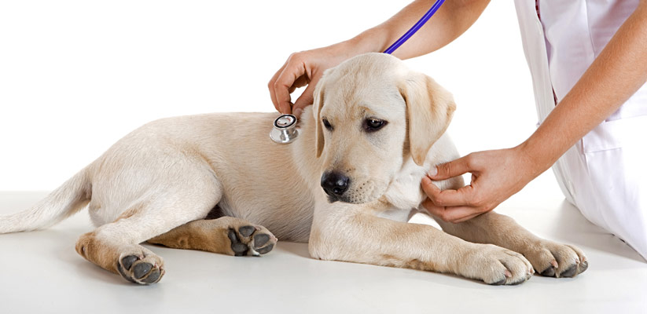

<section id="principal">
    <section id="contenedores">
        <div>
            <h3>Adopta a tu mejor amigo</h3>
            <p>En PATITAS A CASA contamos con sistema de adopcion, ven y conoce a tu nuevo mejor amigo </p>
            <ul>
                <li>Conoce nuestras promociones sobre vacunas a tus cachorros</li>
                <li>Contamos con veterinarios certificados en cirujia</li>
                <li>Patitas a casa tiene los mejores accesorios para tus mascotas</li>
            </ul>
            
        </div>
        <hr>
        <div>
            <h1>Servicios de Clínica y Hospitalización Veterinaria</h1>
            
            <p>
                En la Clínica Veterinaria del Animals contamos con excelentes  programas de medicina preventiva como es la aplicación de vacunas para perros,  gatos y hurones de los laboratorios más reconocidos y con los  distribuidores  del ramo que se han  destacado por el mantenimiento de la cadena fría para que los biológicos al ser  aplicados a su mascota se encuentren en perfectas condiciones.
            </p>
            <hr>
        </div>
        <div id="carouselExampleSlidesOnly" class="carousel slide" data-ride="carousel">
            <div class="carousel-inner">
              <div class="carousel-item active">
                
              </div>
              <div class="carousel-item">
                
              </div>
              <div class="carousel-item">
                
              </div>
              <div class="carousel-item">
                
              </div>
              
            </div>
          </div>
          <hr>
          <section>
            <div class="row">
                <div class="col-sm-1">
                    
                </div>
                <div class="col my-auto">
                    <h4>Medicina Preventiva</h4>
                </div>
            </div>
            <hr>
            <div class="row">
<p>
    En la Clínica Veterinaria Animals contamos con 
    excelentes programas de medicina preventiva como es la aplicación de vacunas para perros, gatos y 
    hurones de los laboratorios más reconocidos y con los distribuidores  
    del ramo que se han destacado por el mantenimiento de la cadena fría para que 
    los biológicos al ser aplicados a su mascota se encuentren en perfectas condiciones.

También contamos con el chequeo geriátrico el cual 
recomendamos para perros de talla miniatura a partir de los 9 años de edad, los 
perros de talla media a partir de los 7 años y los de talla gigante como
 el gran danés o san bernardo a partir de los 6 años, en estos chequeos podemos detectar enfermedades antes 
 de la presentación de los signos clínicos y comenzar una estrategia para que nuestros
 amigos tengan una vida más larga y de mejor calidad.
</p>
            </div>
          </section>
    
</section>
